Supported On-call Schedules & Rotations
Squadcast provides a completely customizable schedules feature where you can configure almost any regular or complex schedules that are followed by organizations today.
This document walks you through some popularly used schedules and how you can set them up on Squadcast. For more information on some basics of schedule creation on Squadcast, please go through this.
Squadcast Schedules is built to address any kind of complex shifts, even those that are not mentioned in this article. We’d be happy to walk you through setting this up if your use case is not covered here or is too complex. Do drop us a line here and we’ll get back to you shortly.
Daily Rotations
Members of your team are rotated on a daily basis to handle on-call for a particular service. You can choose to add multiple users or a squad for the rotations.
1.Go over to the Schedules tab from the navigation sidebar. Click on the + button on the right corner of the screen.
2.You can name the schedule with the type of rotation it is or the service for which the schedule is created. You can add a description to the schedule that provides more context to the on-call schedule.
You can use letters, numbers and special characters in both these spaces.
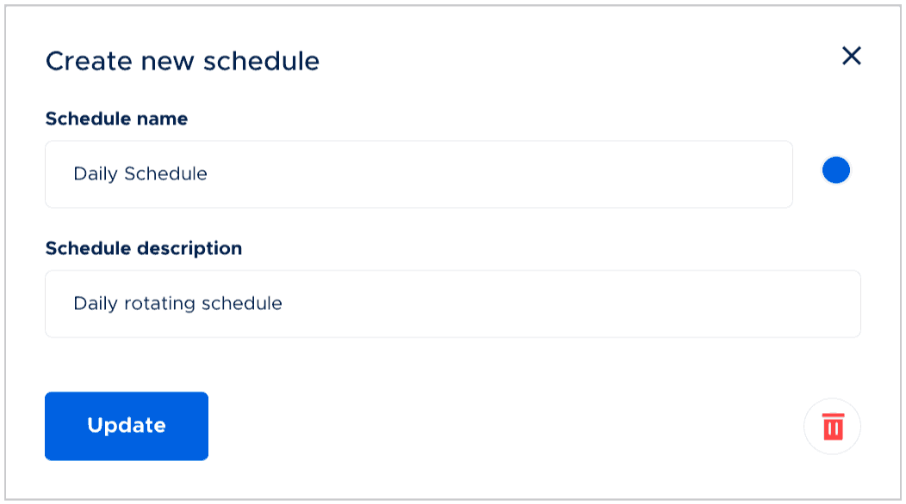
3.You can customize this further by adding a different colour to the created schedule. You can choose from one of the shown colours from the palate or you can add your own by typing in the appropriate HEX code.
By default, the colour for the schedule will be 0F61DD
4.To add rotations to the created schedule, click on the date from which you want your schedule to start. You can also drag from the start date to end date. This will then open a UI pop-up with the chosen dates.

5.Time: Add the time for which the rotations will be active. Then choose the schedule for this holds good. In this case, we will choose “Daily Schedule”.
6.Repeats: For a Daily on-call schedule where the rotations happen on a daily basis, you need to type 1 in the text box and pick the Day option from the dropdown shown under Repeats Every. This now means that for every day, there will exist a new rotation based on the start and end times chosen in the previous section.
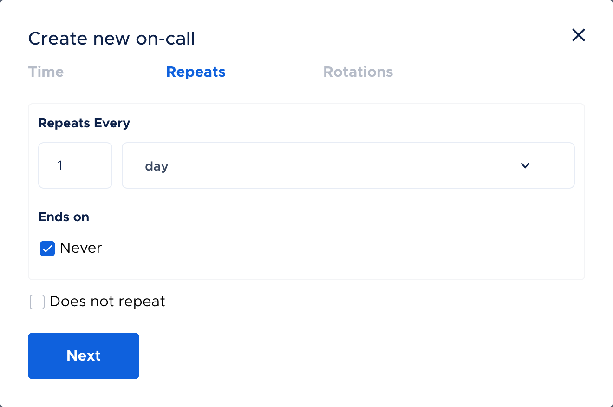
Since this is a recurring schedule, you will need to uncheck/untick the Does Not Repeat box. This will ensure that the schedule created will go on forever until terminated by you manually.
If you want this to be a recurring schedule only upto a certain date, then uncheck/untick the Never box and choose the date on which this schedule will end.
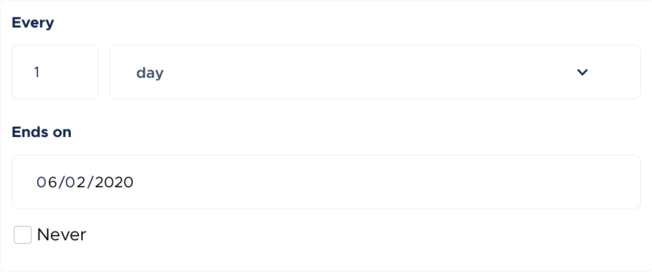
By default, the Does Not Repeat box will remain unchecked/ unticked to create recurring schedules.
You will only be able to see 1 year ahead in time but the recurring schedules created will continue to function as configured irrespective of the viewing cycles.
7.Rotations: You can add in the first user in #1 Rotation. Click on Add New Rotation to add in the second user in #2 Rotation and so on. This will now ensure that every day, the rotation changes between the users added in the rotation layers.
Your Daily on-call rotation is now configured.

You can update any of the rotation from a particular schedule by clicking on that specific event. You can then click on the Edit button on the top right corner of the UI pop-up and update accordingly.

Only the Admin and Account Owner roles have the authority to create, update and delete schedules.
To update the name, description or colour of the schedule, click on the relevant schedule from the list on the right. This will then show a UI pop-up where you can update these details.
You can add a single user, multiple users or a squad and multiple squads to the rotation layers.
If you want to the rotation to occur every few days instead of daily, in the Repeats section of the schedule pop-up, set the number of days accordingly and keep the rotation to day.
The image below shows a daily rotation as was explained in the case above.
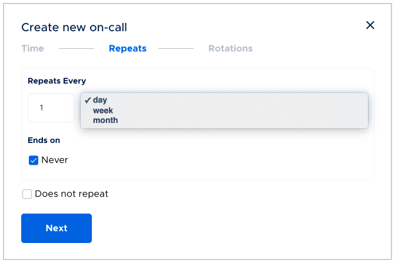
Weekly Rotations
Members of your team are rotated on a weekly basis to handle on-call for a particular service. You can choose to add multiple users or a squad for the rotations.
Assuming, you have already created a schedule as discussed in the previous section, we will now create an on-call schedule with a weekly rotation.
1.Click on the date from which you want your schedule to start. You can also drag from the start date to end date. This will then open a UI pop-up with the chosen dates.
2.Time: Add the start time and end time of the shift. Then choose the schedule for this holds good. In this case, we will choose “Weekly Schedule”.
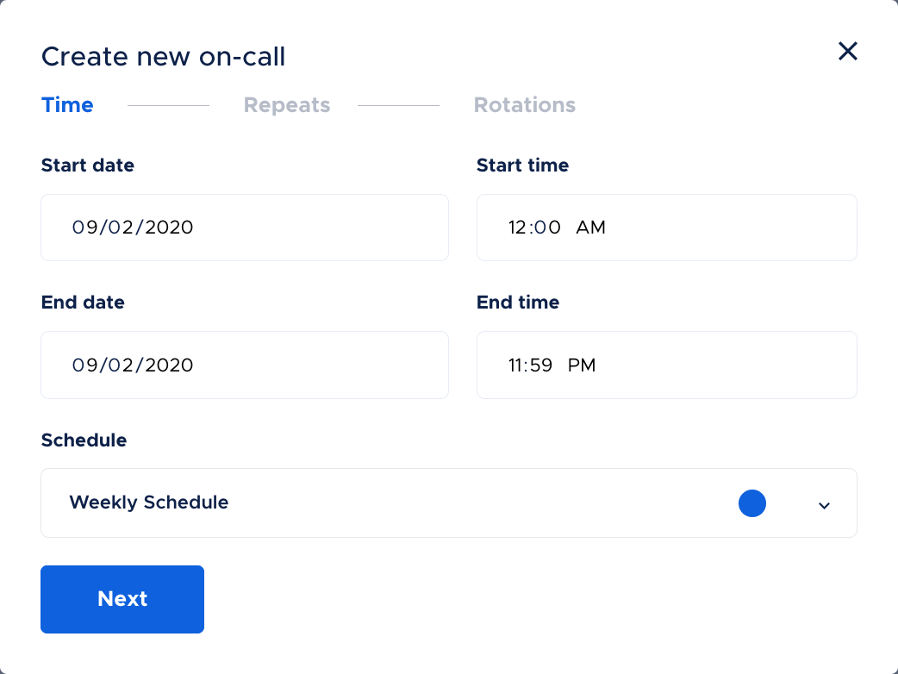
3.Repeats: For a weekly on-call schedule where the rotations happen every week, you need to type 1 in the text box and pick the week option from the dropdown shown under Repeats Every. All the days of the week will appear. Select the day on which you will want the shift to rotate. In this case, we will choose S(Sunday) as the start date which corresponds to the date chosen in the previous step.
You can choose a day of the week on which you will want the shift to repeat. This will have to correspond to the start date of the schedule.
That is, if your schedule starts on a 9th Feb 2020, which falls on a Sunday. You will have to include Sunday in the Repeats section. You can choose to add other days of the week along with this as well.
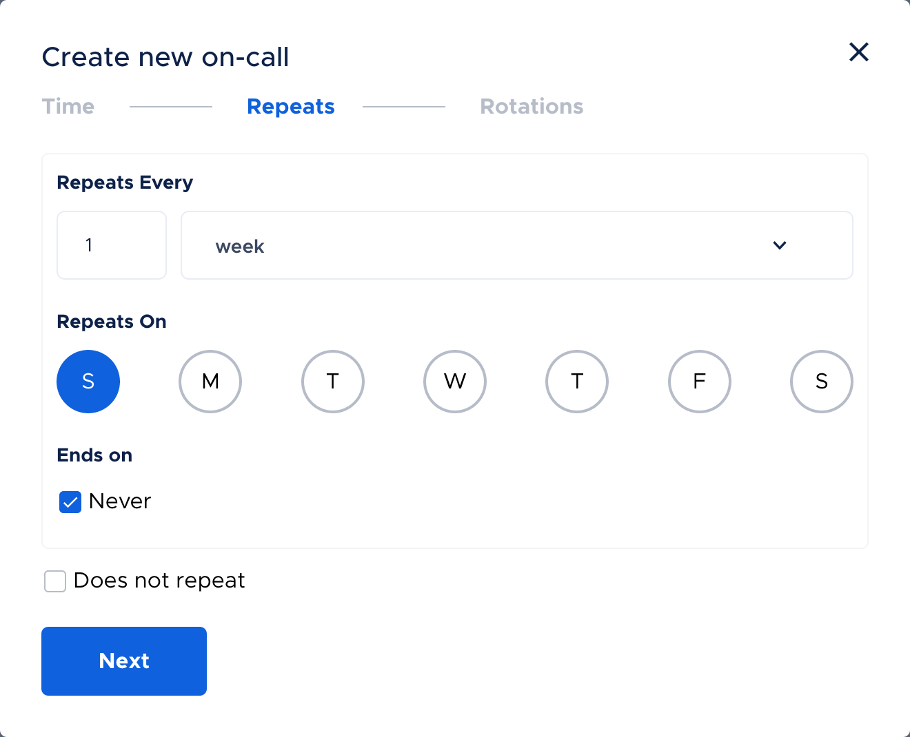
Since this is a recurring schedule, you will need to uncheck/untick the Does Not Repeat box. This will ensure that the schedule created will go on forever until terminated by you manually.
If you want this to be a recurring schedule only upto a certain date, then uncheck/untick the Never box and choose the date on which this schedule will end.
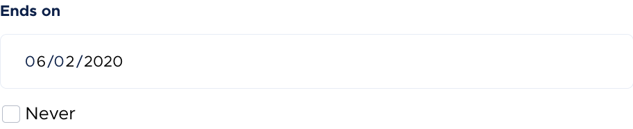
4.Rotations: You can add in the first user in #1 Rotation. Click on Add New Rotation to add in the second user in #2 Rotation and so on. This will now ensure that every Sunday, the rotation changes between the users added in the rotation layers.
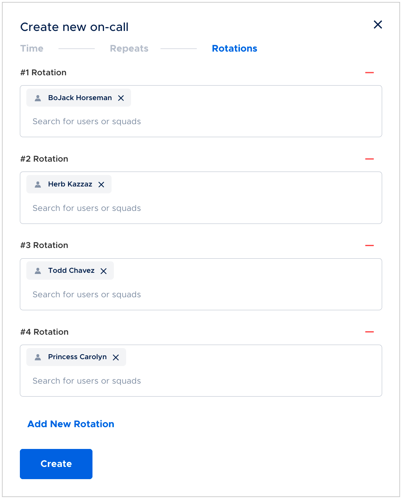
This creates a weekly schedule in which there is a person who is on-call every Sunday.
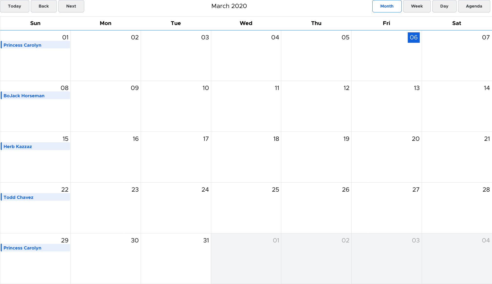
5.We now need to follow the 4 steps from above to create weekly schedules for all the other days of the week with the rotations being added in the same order as we did for Sunday.
6.This creates a weekly on-call which will look like this.

Custom On-Call Schedule with Weekly Repetition
In cases where you need to create an on-call schedule for random days of the week. The rotations change on a daily basis and the schedule will repeat every week. This can be configured this way:
This directly jumps to the configuration part assuming that the schedule’s name, description and colour and already configured based on the first section of this article.
In this use case, we will create an on-call schedule which will repeat every week on Monday, Wednesday and Friday and the shift will rotate on each of these days.
1.Click on the date from which you want your schedule to start. You can also drag from the start date to end date. This will then open a UI pop-up with the chosen dates.
2.Time: Add the start time and end time of the shift. Then choose the schedule for this holds good. In this case, we will choose “Weekly Repetition”.
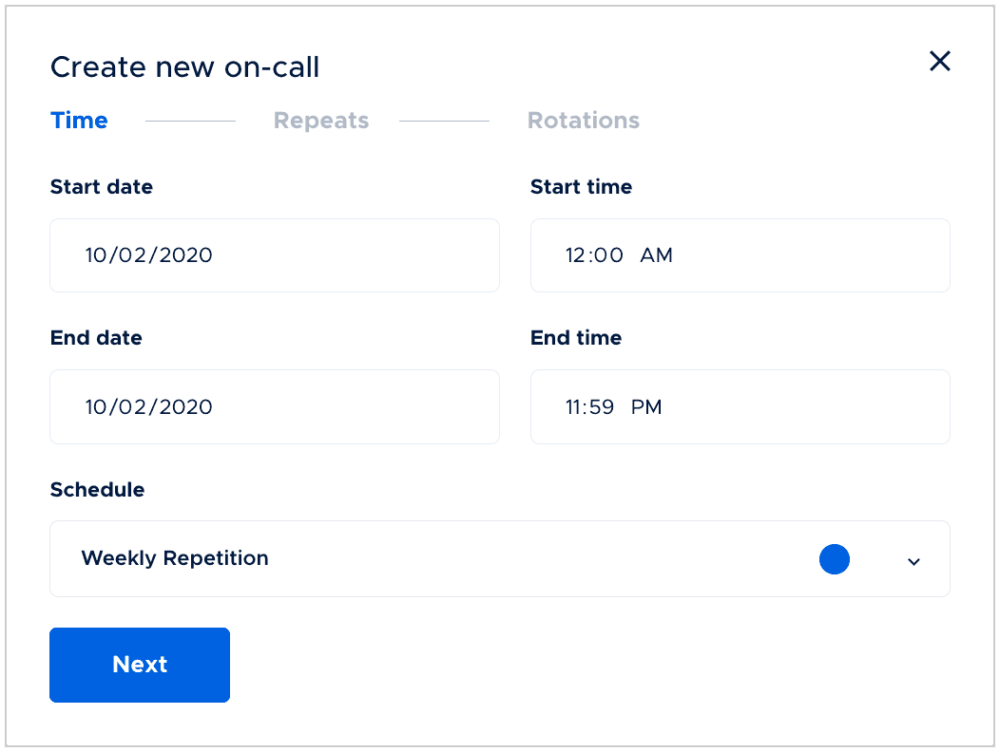
3.Repeats: For a weekly repetition, you need to type 1 in the text box and pick the week option from the dropdown shown under the Repeats Every section. All the days of the week will appear. As we want to repeat on Monday, Wednesday and Friday only, we will choose M, W and F accordingly.

Since this is a recurring schedule, you will need to uncheck/untick the Does Not Repeat box. This will ensure that the schedule created will go on forever until terminated by you manually.
If you want this to be a recurring schedule only upto a certain date, then uncheck/untick the Never box and choose the date on which this schedule will end.
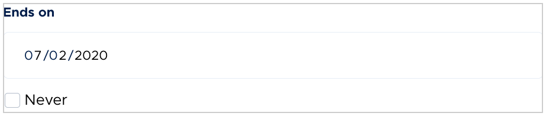
4.Rotations: You can add in the first user in #1 Rotation. Click on Add New Rotation to add in the second user in #2 Rotation and so on. This will now ensure that every day you chose in the previous step, the rotation changes between the users added in the rotation layers.
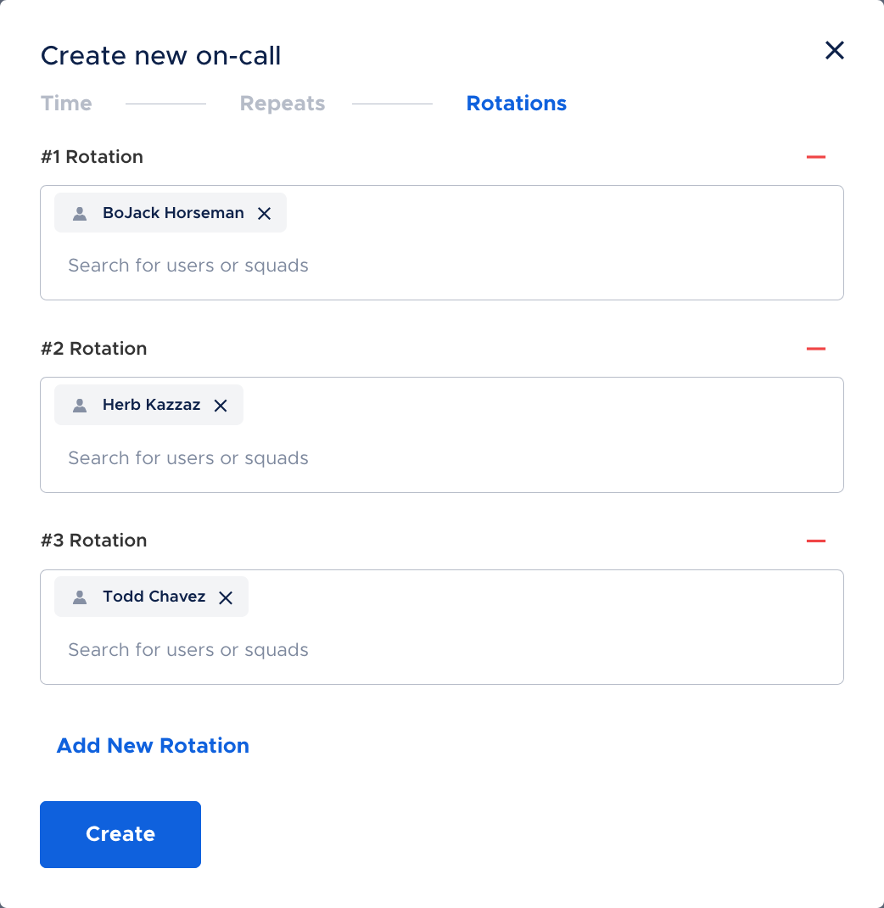
This creates a schedule having on-call in some custom days of a week with a shift rotation on each of the chosen days.
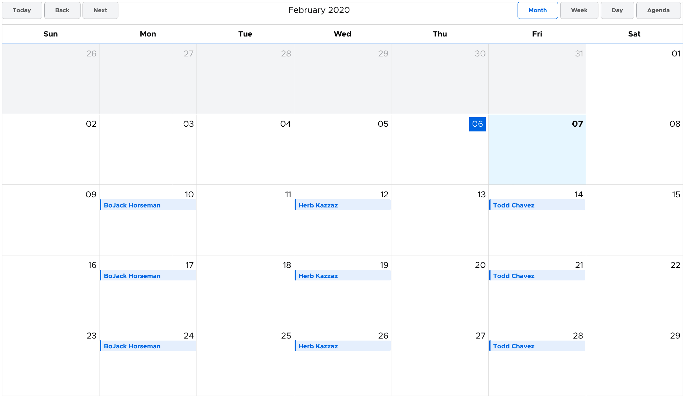
Custom Rotations
- Off-hours: Some teams use on-call schedules just for hours outside the regular working hours. This usually rides on the assumption that someone will always be available to respond to an incident if it were to occur during business hours.
- Business/On hours: It’s advisable to have dedicated schedules for people who will be on-call during business hours to help estimate and plan out other responsibilities that coincide.
For this use case, we will create a schedule with the following timings:
- Person A on-call from 9am to 5pm (Business/On hours)
- Person B on-call from 5pm to 11:59pm (Off hours)
- Person C on-call from 12am to 9am (Off hours)
It would help if you created two separate schedules with appropriate names, colours and description. Here, we are using on-call schedules named On hours and Off hours.
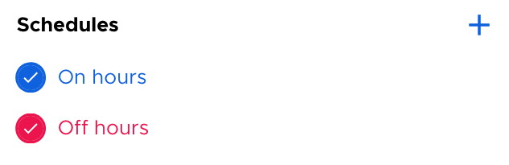
On-call from 9am to 5pm (On hours) **
1.Time**: To add on-call to the created schedules, click on the date from which you want your schedule to start. In start time, enter 9:00 AM and in end time, enter 5:00 PM and on the schedule, select On hours (schedule which we had created in the previous step).
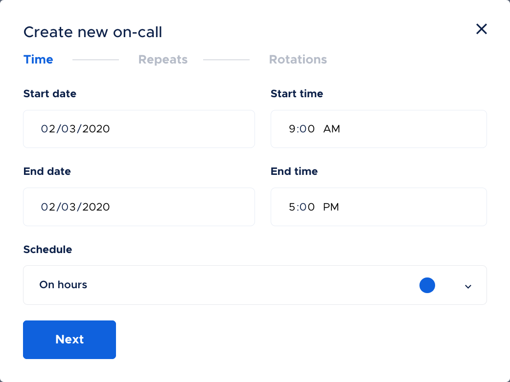
2.Repeats: As we want our on-call from Monday to Friday, We will select 1 week in the Repeats Every section and then select M, T, W, T, F.

Since this is a recurring schedule, you will need to uncheck/untick the Does Not Repeat box. This will ensure that the schedule created will go on forever until terminated by you manually.
If you want this to be a recurring schedule only upto a certain date, then uncheck/untick the Never box and choose the date on which this schedule will end.
3.Rotations: You can add in the first user in #1 Rotation. Click on Add New Rotation to add in the second user in #2 Rotation and so on. This will now ensure that every day, the rotation changes between the users added in the rotation layers.
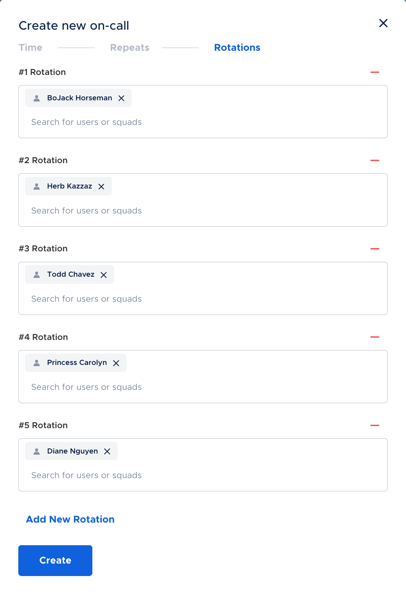
We have now configured the On hours schedule. We now have to configure the two types of Off-hour schedules.
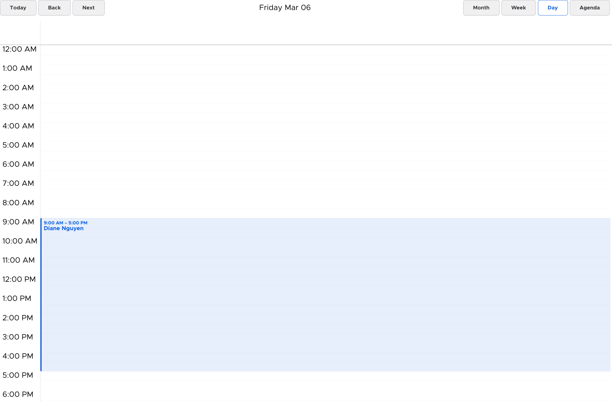
On-call from 5pm to 11:59pm (Off hours) **
1.Time**: To add on-call to the created schedules, click on the date from which you want your schedule to start. In start time, enter 5:00 PM and in end time, enter 11:59 PM and on the schedule, select Off hours (schedule which we had created in the earlier steps).
Repeats: As we want our on-call from Monday to Friday, We will select 1 week in the Repeats Every section and then select M, T, W, T, F.
Since this is a recurring schedule, you will need to uncheck/untick the Does Not Repeat box. This will ensure that the schedule created will go on forever until terminated by you manually.
If you want this to be a recurring schedule only upto a certain date, then uncheck/untick the Never box and choose the date on which this schedule will end.
3.Rotations: You can add in the first user in #1 Rotation. Click on Add New Rotation to add in the second user in #2 Rotation and so on. This will now ensure that every day, the rotation changes between the users added in the rotation layers.

We have now configured one Off hours schedule, we now have to configure one more off hour schedule.
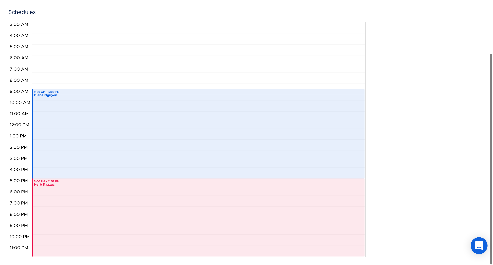
On-call from 12am to 9am (off hours)
1.Time:To add on-call to the created schedules, click on the date from which you want your schedule to start. In the start time, enter 12:00 AM and in the end time, enter 9:00 PM and on the schedule, select Off hours (schedule which we had created in the previous step).

2.Repeats: As we want our on-call from Monday to Friday, We will select 1 week in the Repeats Every section and then select M, T, W, T, F.
Since this is a recurring schedule, you will need to uncheck/untick the Does Not Repeat box. This will ensure that the schedule created will go on forever until terminated by you manually.
If you want this to be a recurring schedule only upto a certain date, then uncheck/untick the Never box and choose the date on which this schedule will end.
3.Rotations: You can add in the first user in #1 Rotation. Click on Add New Rotation to add in the second user in #2 Rotation and so on. This will now ensure that every day, the rotation changes between the users added in the rotation layers.
We have now configured, the On hours and Off hours schedule. The day view of the calendar will now look like:
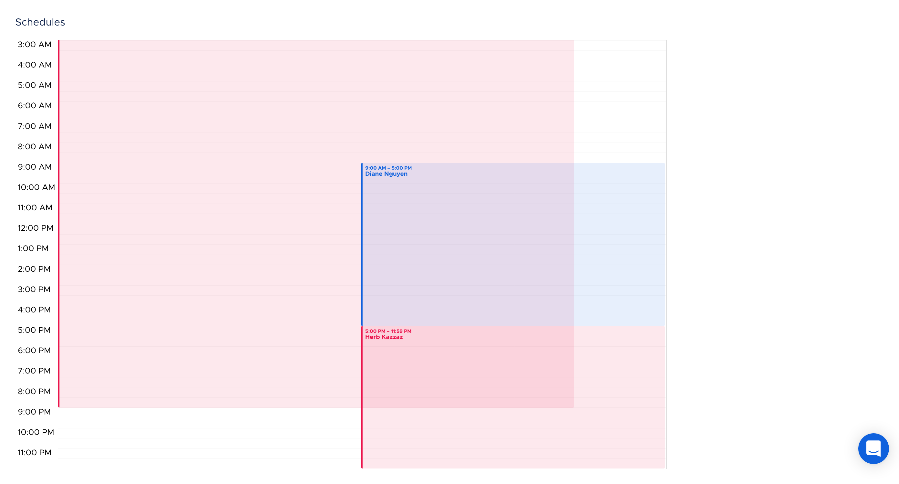
Creating primary and secondary (fallback) layers to avoid gaps in the schedule
As schedules get more complex, it’s easy to miss out gaps in schedules. Creating primary and secondary on-call schedules creates multiple lines of defense in cases like these and if the on-call engineer misses a notification. You can also add multiple schedules as progressive levels of an escalation policy to ensure a backup user will respond to an incident.
In this use case, we will create two fallback on-call layers: Level 1 for primary and Level 2` for secondary schedule.
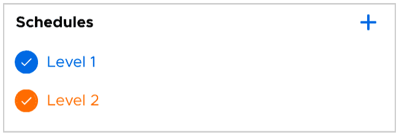
Set the schedule to the appropriate escalation policy. Here we will create a new escalation policy and set Level 1 at 1 min and Level 2 escalation at 20 min.
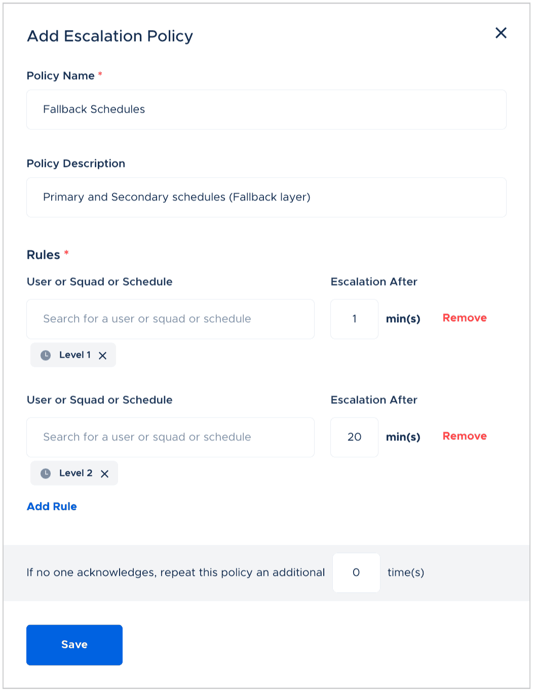
Level 1 **
1.Time**:To add on-call to the created schedules, click on the date and time from which you want your schedule to start and end respectively and select Level 1 as the schedule under which this rotation will fall.
2.Repeats: Since this created with the intent of it being a fallback layer, we want this layer to reflect everyday and at the selected time period. So, we will type 1 in the textbox and select Day in Repeats Every section.
Since this is a recurring schedule, you will need to uncheck/untick the Does Not Repeat box. This will ensure that the schedule created will go on forever until terminated by you manually.
If you want this to be a recurring schedule only upto a certain date, then uncheck/untick the Never box and choose the date on which this schedule will end.
3.Rotations: You can add in the first user in #1 Rotation. Click on Add New Rotation to add in the second user in #2 Rotation and so on. This will now ensure that every day, the rotation changes between the users added in the rotation layers.
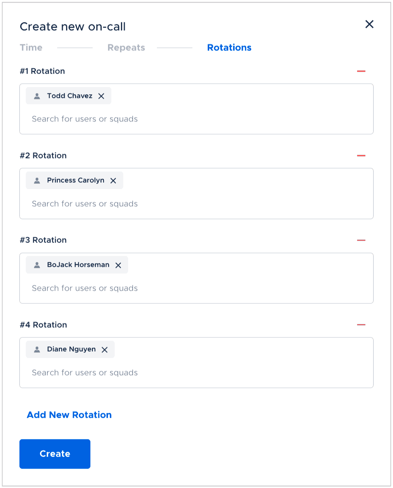
This now creates the Level 1 calendar. We will now create the Level 2 calendar.
Level 2 1.Time: Click on the date from which you want the on-call schedule to start. On the pop-up window, select appropriate start time and end time and select Level 2 as the schedule under which this rotation will fall.
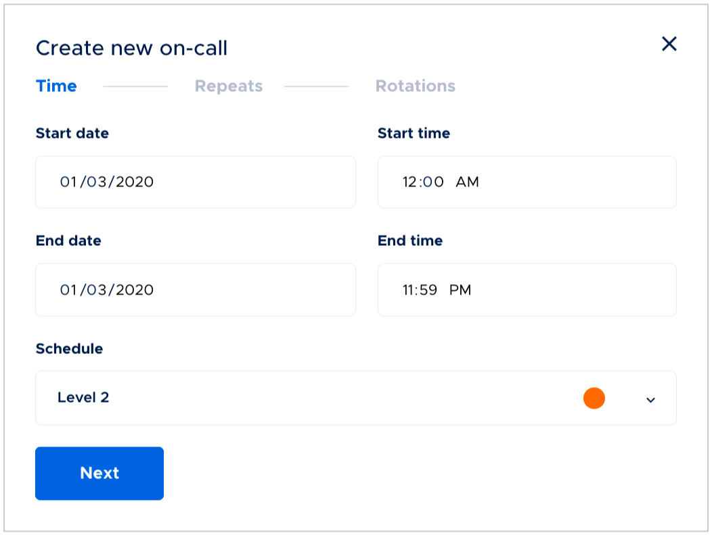
2.Repeats: Since this created with the intent of it being a fallback layer, we want this layer to reflect everyday and at the chosen time periods. So, we will type 1 in the textbox and select Day in Repeats Every section.
Since this is a recurring schedule, you will need to uncheck/untick the Does Not Repeat box. This will ensure that the schedule created will go on forever until terminated by you manually.
If you want this to be a recurring schedule only upto a certain date, then uncheck/untick the Never box and choose the date on which this schedule will end.
3.Rotations: You can add in the first user in #1 Rotation. Click on Add New Rotation to add in the second user in #2 Rotation and so on. This will now ensure that every day, the rotation changes between the users added in the rotation layers. We have added a squad.
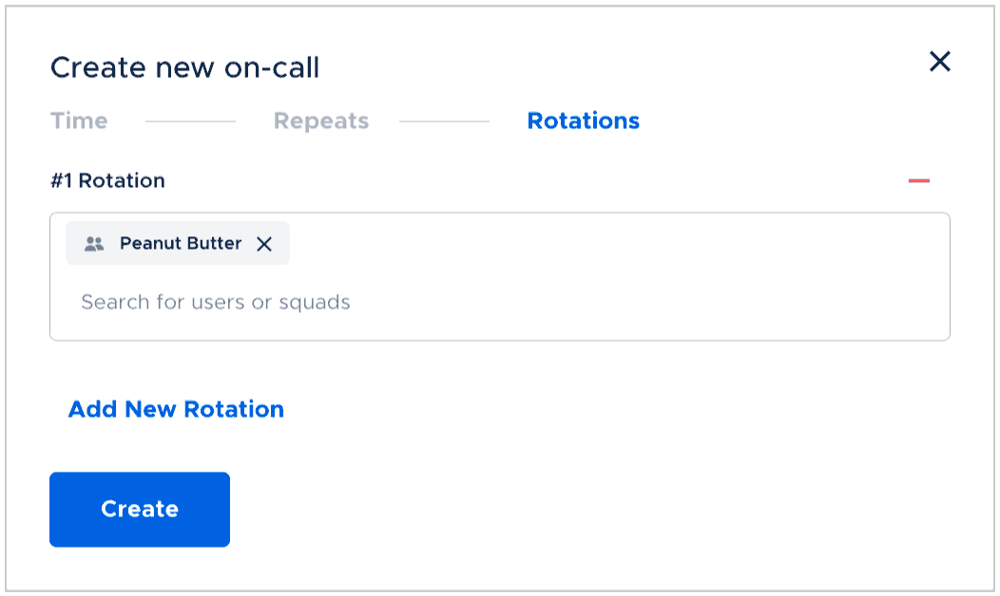
This creates the Level 2 Schedule as well. Now, when an incident comes, it will notify the on-call users/squads belonging to Level 1 after 1 min and users/squads belonging to Level 2 after 20 min of incident trigger time.
Follow-the-sun schedule
The follow-the-sun schedule is used by teams that may work internationally in different time zones, and ensures full 24/7 coverage.
In this use case, we show a user in the US to be on-call in PST (Pacific Standard Time) Business Hours and the next shift is handled by another member from their Australia team to be on-call during the US-off hours which corresponds to Australian working hours in ACT. This is a popularly used schedule mainly to reduce fatigue on just one or a few people and also used the . advantage of multiple timezones to ensure maximum on-call coverage.
In this section, we will see how to create a follow-the-sun schedule between two people living in US (Pacific Standard Time UTC-8) named BoJack Horseman and Australia (Australian Western Standard Time UTC+8 ) named Todd Chavez .
We will assign 6AM PST to 5:59PM PST to BoJack Horseman and 6PM PST to 5:59AM PST to Todd Chavez which corresponds to 10AM AWST to 9:59PM AWST.
Create a Schedule by going over to the Schedules tab from the navigation sidebar and clicking on the + button on the right corner of the screen. In this case, we will name the schedule Follow-the-sun.
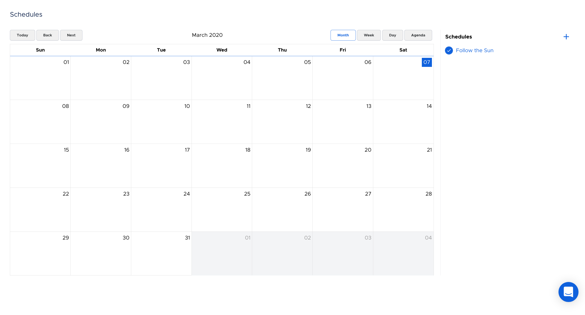
Creating the schedule for BoJack Horseman.
1.Time: Clicking on the start date will pop up a window to create on-call. Assuming that our local timezone is PST, we will choose 6AM as the start time and 5:59PM as the end time. We will choose Follow-the-sun for which this rotation will hold good.
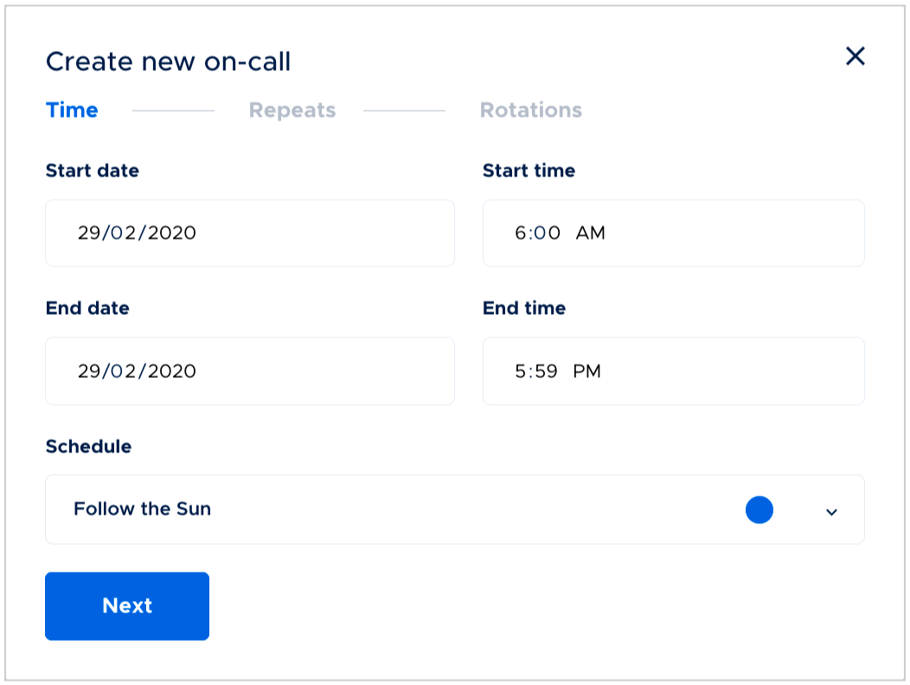
2.Repeat: We will set this as a daily schedule. For that type 1 in the textbox and choose day in the dropdown for the Repeats Every section.
Since this is a recurring schedule, you will need to uncheck/untick the Does Not Repeat box. This will ensure that the schedule created will go on forever until terminated by you manually.
If you want this to be a recurring schedule only upto a certain date, then uncheck/untick the Never box and choose the date on which this schedule will end.
3.Rotation: In the rotation tab, we will select BoJack Horseman.
This creates an on-call for BoJack Horseman who lives in US. We now have to create another on-call for Todd Chavez who lives in Australia. Creating on-call scheduling for Todd Chavez
1.Time: Clicking on the start date will pop up a window to create on-call. Assuming that our local timezone is PST, we will choose 6PM as the start time and 5:59AM as the end time. We will choose the schedule for this holds good. In this case, we will choose “Follow-the-sun”.
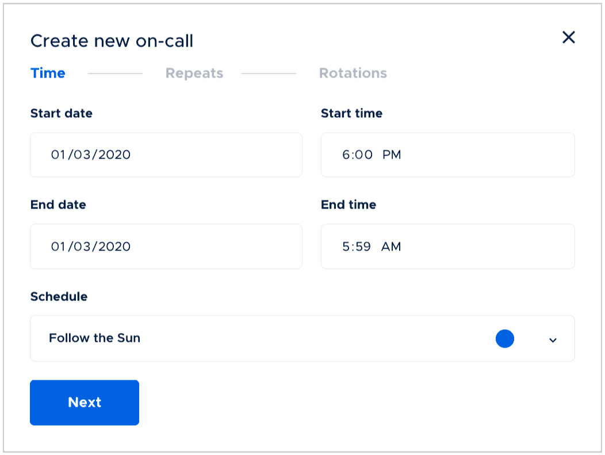
2.Repeat: We will set this as a daily schedule. For that type 1 in the textbox and choose day in the dropdown from Repeats Every section.
Since this is a recurring schedule, you will need to uncheck/untick the Does Not Repeat box. This will ensure that the schedule created will go on forever until terminated by you manually.
If you want this to be a recurring schedule only upto a certain date, then uncheck/untick the Never box and choose the date on which this schedule will end.
3.Rotation: In the rotation tab, we will select Todd Chavez.
This creates an on-call for Todd Chavez as well who lives in Australia.
The selected timezone will default to the local machine timezone. This is especially beneficial for geography-based on-call rotations.
The teams will be able to view any created on-call schedule in their local time.
Now, for BoJack Horseman, his schedule view will show up in PST.
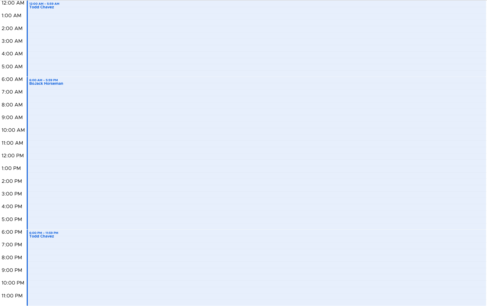
And for Todd Chavez, his schedule view will show up in ACT:
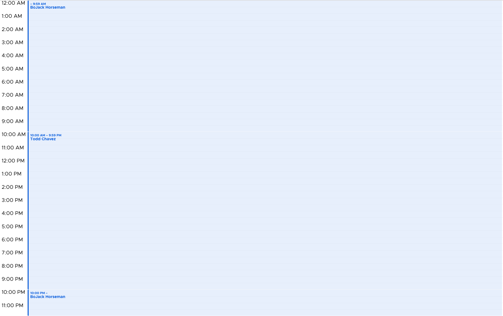
Weekday / Weekend rotations with weekly hand-offs
You can create multiple layers within your schedule to accommodate multiple users that hand off every other week (for example, Person A who covers weekdays and Person B who covers weekends, who rotate on a weekly basis).
Create two Schedules by going over to the Schedules tab from the navigation sidebar and clicking on the + button on the right corner of the screen. For this use case, we will name the schedules Weekday and Weekend.

Creating on-call for Weekdays
1.Time: Clicking on the start date will pop up a window to create on-call. We will select a day corresponding to Monday. By default the time is set to 12am to 11:59pm. We will go with the same.
Select Weekdays in the schedule dropdown.
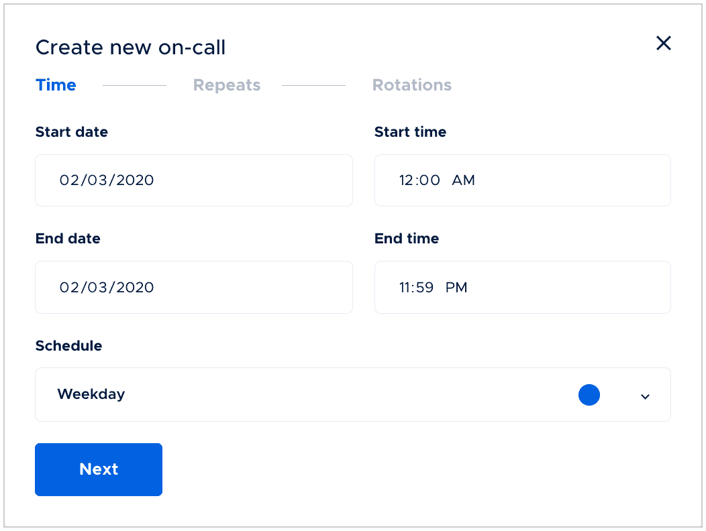
2.Repeat: We will set this on a weekly repeat. For that type 1 in the textbox and choose week in the dropdown from the Repeats Every section. Now select M, T, W, T, F as the week days on which this schedule will be active.
3.Rotations: You can add in the first user in #1 Rotation. Click on Add New Rotation to add in the second user in #2 Rotation and so on. This will now ensure that every day, the rotation changes between the users added in the rotation layers. For, simplicity, we will add one user to be on-call in the weekdays.
This creates the on-call for weekdays. Similarly, we will have to create for weekends.
1.Time: Clicking on the start date will pop up a window to create on-call. We will select a day corresponding to Saturday. By default the time is set to 12am to 11:50pm. We will go with the same. Select Weekend from the schedule dropdown.

2.Repeat: We will set this as a weekly repeat. For that type 1 in the textbox and choose week in the dropdown for the Repeats Every field and select S and S corresponding to saturday and sunday as the week days.
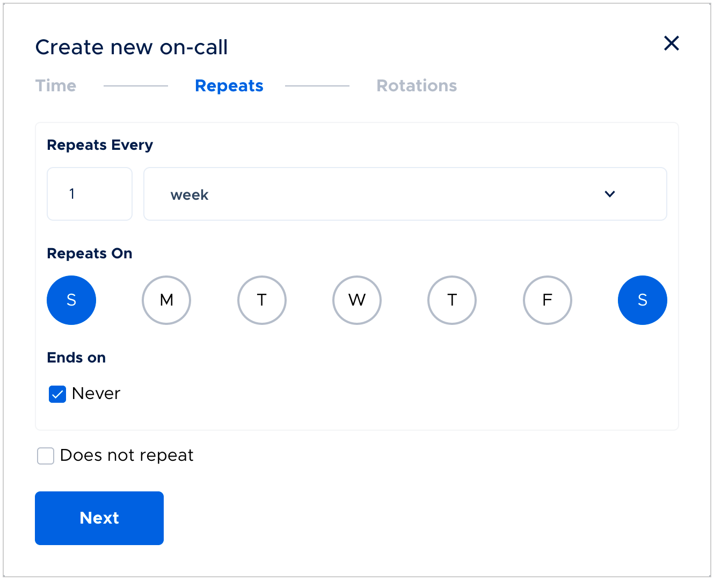
3.Rotations: You can add in the first user in #1 Rotation. Click on Add New Rotation to add in the second user in #2 Rotation and so on. This will now ensure that every day, the rotation changes between the users added in the rotation layers. For, simplicity, we will add one user to be on-call over the weekend.
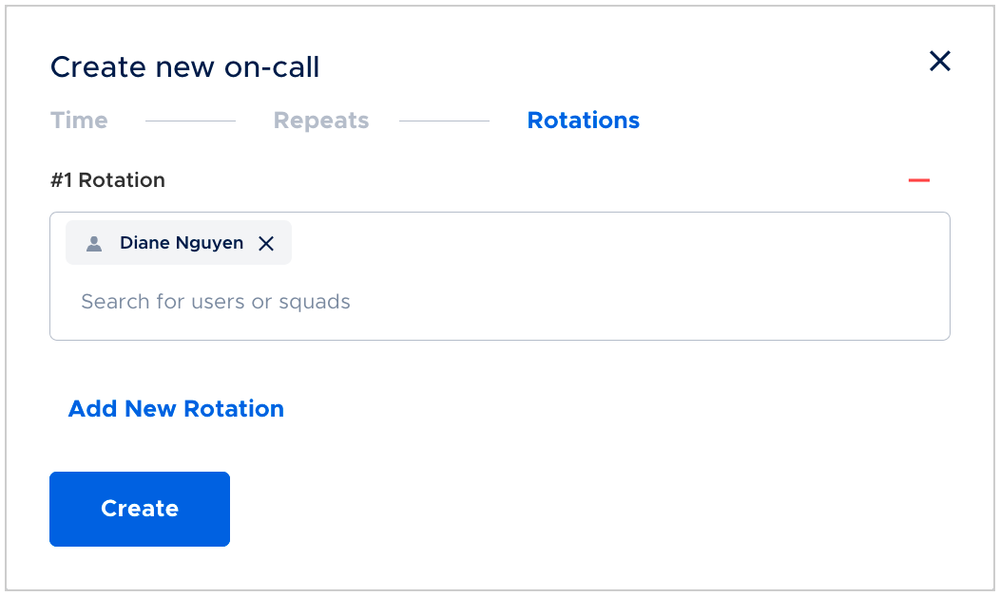
This creates the weekday and weekend schedule which will look like this:
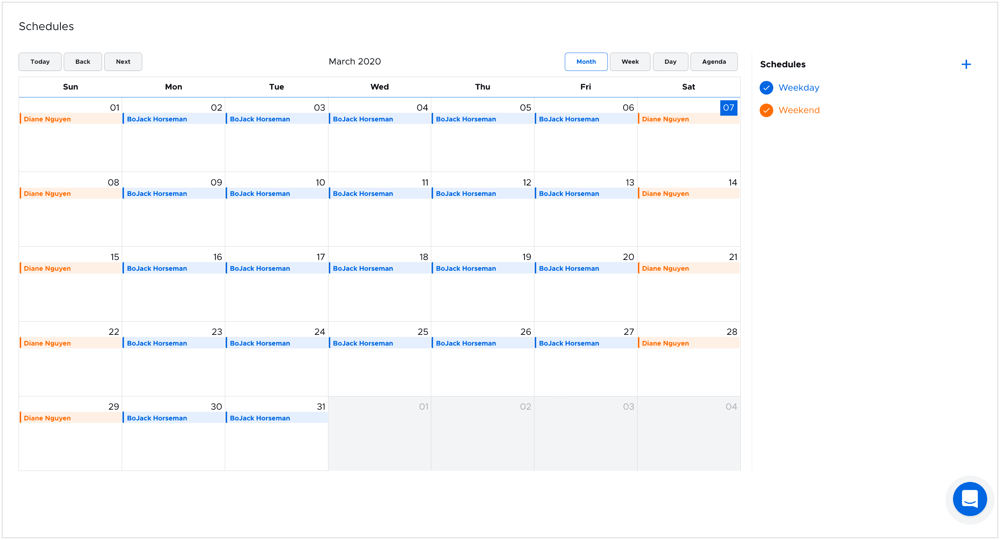